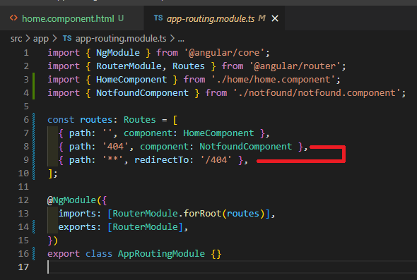
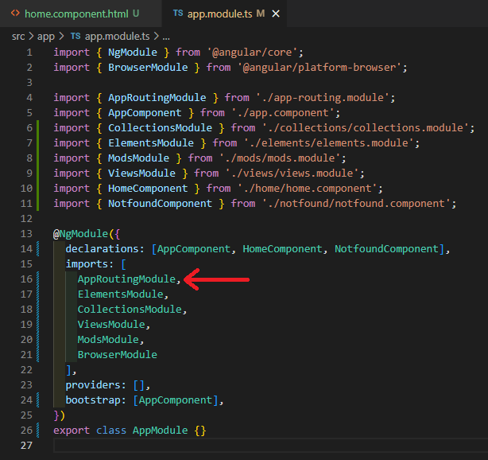

This app will show how to use multiple components and set up routing.
The order of routers set up in the app.module.ts matters, for exmaple
Setting up a ** rule like below:
This will redirect the URL if it is anything other than the list below:
The issue with this is the AppRoutingModule will overwrite all of the below Modules, thus the Routers that have been set up.
In order to resolve this, the AppRoutingModule with the '**' rule needs to be moved to the bottom of the list, it will then be parsed last allowing the other Routers to work as intended, then checking to see if the URL is anything other than the above Routers.